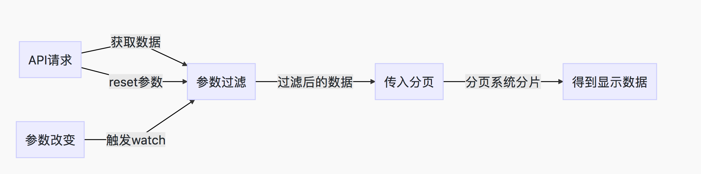

日常开发小经验
Vue 实现前端分页注意事项
前提
分页是常用的页面展示数据， 当数据量不是特别大的时候， 我们可以选择灵活量比较大的前端分页。 但是，分页需要面对的参数比较多， 如果处理不好的话，很容易造成页面的可读性差。
项目环境
Vue + iview
思路

处理方式
1、对应Pug
Card
Row
Input(v-model="params.key_1" placeholder="搜索 xxxx")
...
Row
Table(:columns="tableStyle" :data="ShowInfoList")
Row
Page(:total="SumNum", :page-size="PageSize", @on-change="handlePage", show-elevator, show-total, show-sizer, :current='PageNum', @on-page-size-change="handlePageSize")
2、首先变量
data() {
return {
# 分页的相关参数
SumNum: 0,
PageNum: 1,
PageSize: 10,
# 获取的全部信息，参数过滤后的信息，最终展示的信息
AllInfoList: [],
FilterInfoList: [],
ShowInfoList: [],
# 需要过滤的参数
params: {
key_1: '',
key_2: '',
key_3: '',
},
tableStyle: {}
}
},
3、methods 需要设计的方法
methods: {
# 根据参数对所需要的信息进行过滤
paramUpdate(val) {
let temp = []
# 对AllInfoList进行过滤
for (let item of this.AllInfoList) {
if (item.key_1.indexOf(val.key_1) === -1) {
continue
}
temp.push(item)
# 根据 params 进行分发过滤 ...
}
# 调用一下分页,将页面设置为1.
this.FilterInfoList = temp
this.SumNum = temp.length
this.handlePage(1)
}
# 页面改变函数
handlePage (value) {
this.PageNum = value
this.ShowInfoList = this.FilterInfoList.slice(value * this.PageSize - this.PageSize, value * this.PageSize)
},
# pageSize变更函数
handlePageSize (value) {
this.pageSize = value
this.pageNume = 1
this.ShowInfoList = this.FilterInfoList.slice(0, this.PageSize)
},
# 信息获取函数
getInfo() {
const self = this
API.xxx.get().then((res) => {
# 置空 AllInfoList
self.AllInfoList = [],
# 对 params进行初始化(看需要)
self.params = ....
self.AllInfoList = res.data.xxxxx
...
self.paramUpdate(self.params)
})
}
}
4、需要做watch的操作
# 监听 params的变化
watch: {
params(val) {
this.paramUpdate(val)
}
}